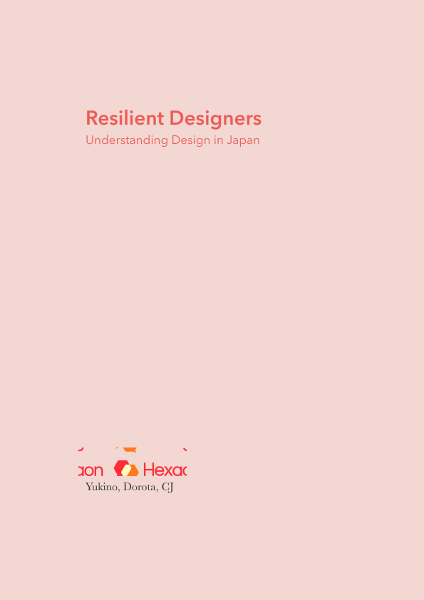
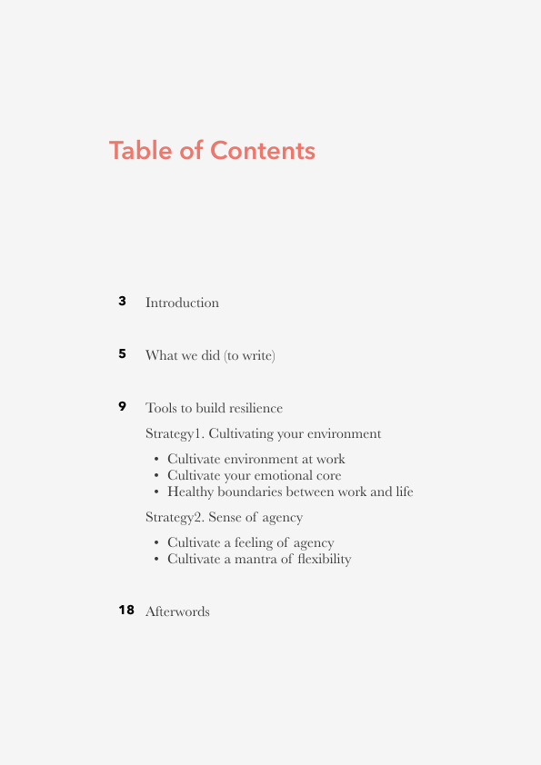
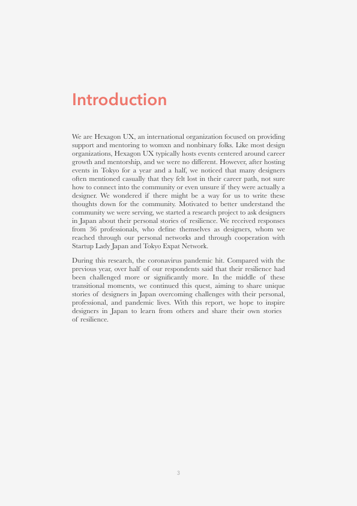
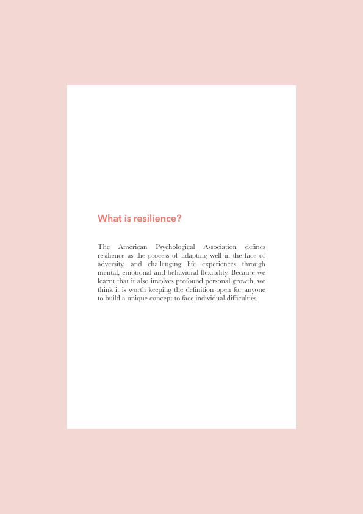
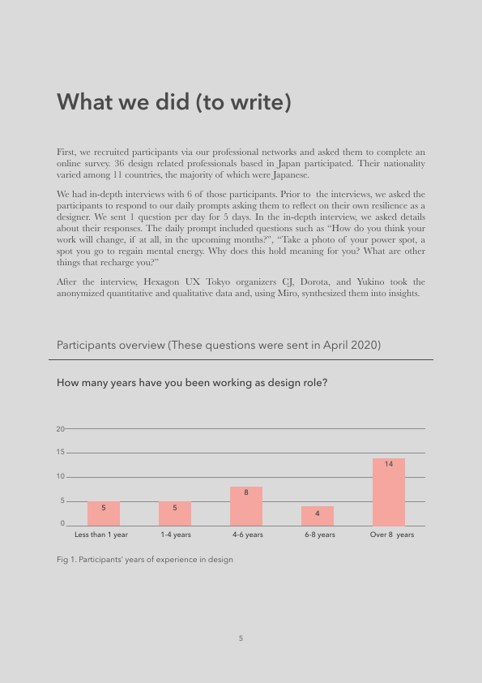
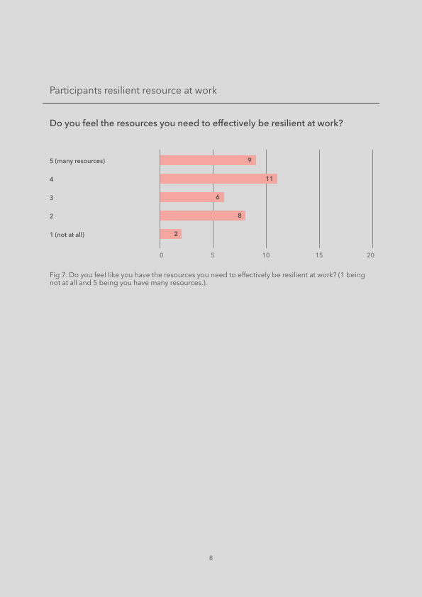

Hexagon UX is to support women & non-binary folks in UX.
- RoleOrganizer, Researcher
- SiteHexagon UX
- TalkIxDD 2020
- Report(EN)Resilient designers
- Report(JP)しなやかなデザイナー
Like most design organizations, Hexagon UX typically hosts events, and we were no different.
However, after hosting events in Tokyo for a year and a half, we noticed that many designers often mentioned casually that they felt lost in their career path,
not sure how to connect with the community or even unsure if they were actually a designer. We wondered if there might be a way for us to write these thoughts down for the community.
Motivated to better understand the community we were serving, we started a research project to ask designers in Japan about their personal stories of resilience.
For this research project, we used the following methods:
- SNS to reach research target
- Google forms to collect data
- Miro for synthesis
- In-depth interviews







